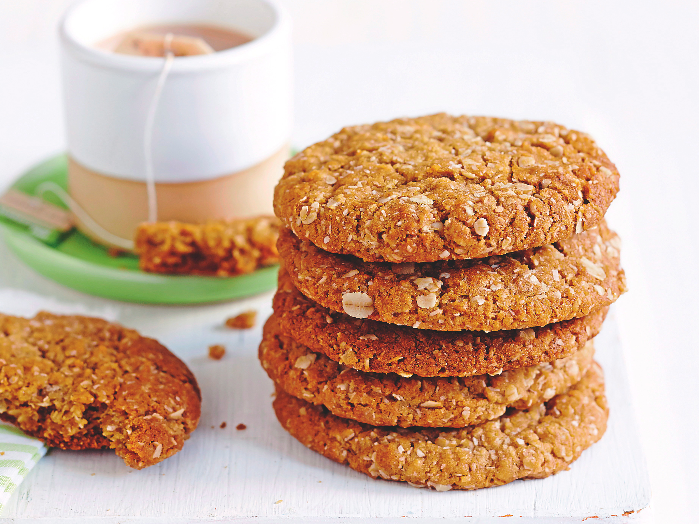
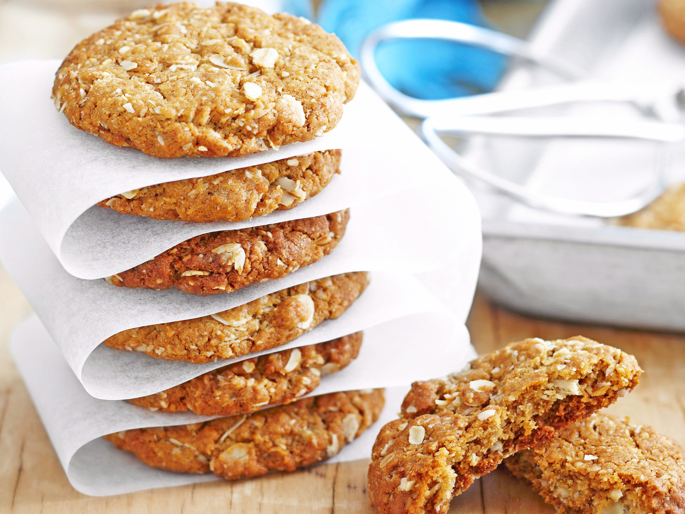

Anzac Biscuit
A traditional Australian Biscuit,sent overseas AnZAC's in World War I.
Serves
: 48
Preparation time
: 10 minutes.
Ingredient
1 cup self raising flour
1 cup rolled oats
Method
Shift the flour into a bowl. Add the sugar, rolled oats and coconuts.
KEMBALI KE MENU AWAL